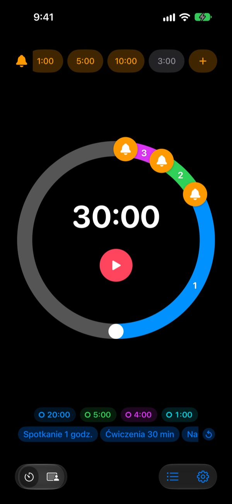
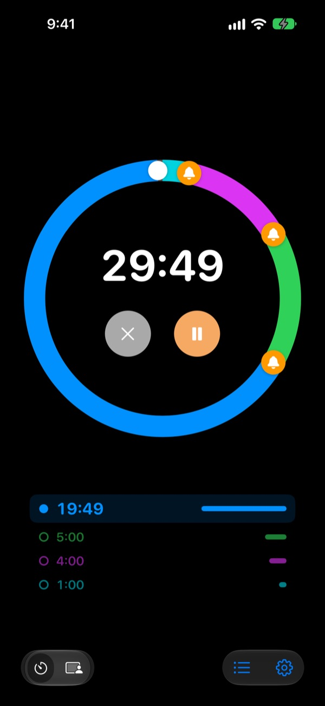
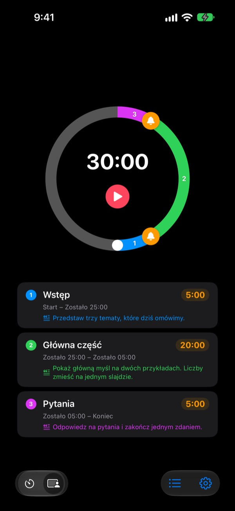
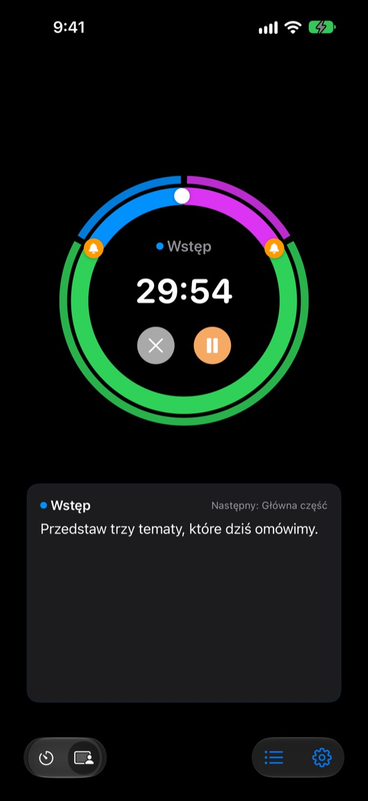

Nie wtedy, gdy już po wszystkim,
ale zanim
5 minut przed końcem wystąpienia, 3 przed końcem spotkania. Rereminder odzywa się w każdym wybranym przez Ciebie momencie, więc nie musisz co chwilę zerkać na zegarek.
Ostrzeżenia są bezpłatne i bez limitu. Na iPhone’a, Apple Watch i Maca.

Wypróbuj tutaj
Wybierz długość i ostrzeżenia, a potem naciśnij czerwony przycisk. Minuta mija w sekundę, a każde ostrzeżenie odzywa się we właściwej chwili.
Minutnik zadzwonił, gdy było już za późno?
Zwykły minutnik dzwoni dopiero na zerze. Wystąpienie kończy się przed wnioskami, lekcja urywa się bez podsumowania, a spotkanie wchodzi na kolejne bez żadnej decyzji. Nie potrzebujesz sygnału, że czas minął, tylko ostrzeżenia, gdy wciąż jest czas, by spokojnie zakończyć.
Ostrzeżenia przed końcem, ile chcesz
Przeciągnij dzwonki na tarczy na 10, 5 lub 1 minutę przed końcem albo w dowolne inne miejsce. Nie ma limitu, a każde ostrzeżenie może mieć własny tekst, np. „Zamykaj slajdy”.
Przy wygaszonym ekranie pozostały czas widać na ekranie blokady i w Dynamic Island, a Apple Watch stuka Cię w nadgarstek.

Podziel wystąpienie na części
Wstęp 5 minut, rozwinięcie 20, pytania 5. Nadaj każdej części nazwę i tekst. Przy każdej zmianie dostajesz ostrzeżenie z jej nazwą, a plan czasowy trzyma się niemal sam. (Pro)

To, co masz teraz powiedzieć, jest na ekranie
W trakcie widzisz dużym drukiem tekst bieżącej części i to, co będzie dalej. Gdy przekroczysz zero, liczy dalej, więc wiesz, o ile przeciągnąłeś. (Pro)

Zaczynasz w trzech krokach
- 1
Ustaw czas
Obróć tarczę albo stuknij czas i wpisz go. Jedno okrążenie to 60 minut, dwa to 120.
- 2
Rozmieść ostrzeżenia
Stuknij u góry etykietę, np. 1:00 lub 5:00, albo przeciągnij dzwonek na tarczę.
- 3
Uruchom i zapomnij
Zablokuj iPhone’a. iPhone i Apple Watch odezwą się w każdym ustawionym momencie.
Najczęściej używane ustawienia
- Wystąpienie, 20 minut
- 5 min przed „Przejdź do wniosków”, 1 min przed „Podziękuj”
- Lekcja, 45 minut
- 10 min przed „Zadaj pracę domową”, 3 min przed „Podsumowanie”
- Spotkanie, 30 minut
- 5 min przed „Spisz decyzje”
- Zajęcia pilatesu lub jogi
- Tryb sesji, jedna część na sekwencję (Pro)
- Nauka, 25 minut
- 5 min przed, potem przerwa
- Przerwa między seriami, 3 minuty
- 30 s przed „Szykuj się do kolejnej serii”
- Mentoring, godzina
- 15 i 5 min przed
To, czego używasz często, zapisz jako szablon i uruchamiaj jednym stuknięciem (od planu Pamięć). Minutnik możesz też uruchomić lub zatrzymać przez Skróty i Siri.
Ostrzeżenia są bezpłatne. Płacisz tylko, jeśli ma coś zapamiętać.
Za darmo
- Ostrzeżenia bez limitu
- Własny tekst przy każdym ostrzeżeniu
- Aktywność na żywo na ekranie blokady i w Dynamic Island
- Alarmowanie, aż zareagujesz, i pełny alarm na koniec
- Aplikacja na Apple Watch i pasek menu na Macu
- Wszystkie kolory motywu
Pamięć · Pro
- Pamięć: zapisuj ustawienia jako szablony i uruchamiaj je jednym stuknięciem
- Pamięć: po ponownym otwarciu wszystko jest tak, jak zostawiłeś
- Pro: wszystko z Pamięci plus tryb sesji z nazwami części i tekstami
- Pro: nadgodziny, historia i statystyki
Przy każdym planie wybierasz subskrypcję roczną albo jednorazowy zakup na zawsze. Tryb sesji, nadgodziny i historię możesz kilka razy wypróbować przed zapłatą.
Bez reklam. Jedna przepustka otwiera też wszystkie aplikacje Leeo.
Częste pytania
Ostrzeżenie się nie odezwało.
Prawie zawsze chodzi o uprawnienia albo tryb skupienia. Sprawdź zgodę na powiadomienia w aplikacji w Ustawienia › Sposób powiadamiania. Jeśli używasz trybu skupienia, dodaj Rereminder do dozwolonych aplikacji w Ustawieniach iOS › Skupienie. W trybie cichym jest tylko wibracja. Jeśli Rereminder jest w Ustawienia › Powiadomienia › Zaplanowane podsumowanie, powiadomienia są wstrzymywane, więc go stamtąd usuń.
Czy zauważę koniec w trybie cichym?
Tak. Włącz „Na koniec pełny alarm”, a zadzwoni głośno nawet w trybie cichym lub skupienia. Z opcją „Alarmuj, aż zareaguję” powtarza się, dopóki nie stukniesz Zatrzymaj lub Drzemka w powiadomieniu.
Apple Watch się nie synchronizuje.
Otwórz w aplikacji Ustawienia › Moje urządzenia, gdzie zobaczysz, którego kroku brakuje. Zegarek musi być sparowany z tym iPhone’em, Rereminder musi być na nim zainstalowany, a po instalacji trzeba go raz otworzyć na zegarku. Potem minutnik trafia na zegarek nawet przy zamkniętej aplikacji.
Mac wyświetla się jako niepołączony.
„Połączony” oznacza, że aplikacja była otwarta na tym Macu w ciągu ostatnich 10 minut, więc dopiero co wybudzony Mac pojawi się po kilku minutach. Oba urządzenia muszą używać tego samego konta iCloud z włączonym iCloud Drive. Aplikacja na Maca wymaga macOS 26 lub nowszego.
Zapłaciłem, ale nic się nie odblokowało.
Stuknij „Odtwórz zakupy” na ekranie planów, będąc zalogowanym na to samo konto Apple, którym płaciłeś. Zakupy na zawsze wracają nawet po usunięciu aplikacji lub zmianie urządzenia.
Moje zapisane szablony są zablokowane.
Wciąż tam są. Bez Pamięci lub Pro pozostają widoczne, ale zablokowane, i otwierają się od razu po zakupie jednego z planów.
Jak odzyskać pieniądze?
Zwrotami zajmuje się Apple. Zgłoś prośbę na reportaproblem.apple.com z konta Apple, którym płaciłeś. Jeśli coś nie działało, napisz też do mnie, żeby następna osoba tego nie przeżyła.
Mogę spróbować bez instalowania?
Otwórz m1zz.github.io/rereminder na iPhonie, a minutnik od razu ruszy jako App Clip. Tarcza i ostrzeżenia są na miejscu. Szablony, tryb sesji i aplikacja na zegarek są w pełnej aplikacji.
Na jakich urządzeniach działa?
iPhone z iOS 26 lub nowszym, Apple Watch z watchOS 11.6 lub nowszym i Mac z macOS 26 lub nowszym. iPad nie jest jeszcze obsługiwany. Aplikacja jest dostępna w 24 językach.
Gdzie są moje dane?
Minutniki, szablony, nazwy części, teksty i historia zostają na Twoim urządzeniu i znikają po usunięciu aplikacji. Aplikacja wysyła tylko anonimowe statystyki użycia, które pomagają ją ulepszać. Polityka prywatności podaje dokładnie, jakie.
Pytania lub uwagi? Napisz na leeo@kakao.com. Zwykle odpowiadam w ciągu 2–3 dni.